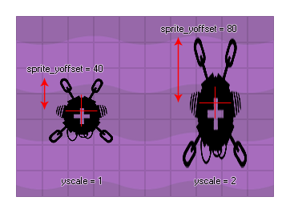

sprite_yoffset
Returns : Real
This read only variable returns the local yoffset (the y component of the origin as defined in the sprite editor) of the sprite that has been assigned to the instance. This yoffset is returned in
pixels and will be dependant on the image_yscale, so that (for example) if a square 32x32 sprite is defined as having the y origin at 16, when that sprite is
scaled by 2 this variable will return 32. If you need the un-scaled yoffset you should use sprite_get_yoffset.

if y - sprite_yoffset < 0
{
y = sprite_yoffset;
}
The above code checks to see if the top edge of the sprite of the instance is outside the room and if it is it moves the instance so that the whole sprite is visible.